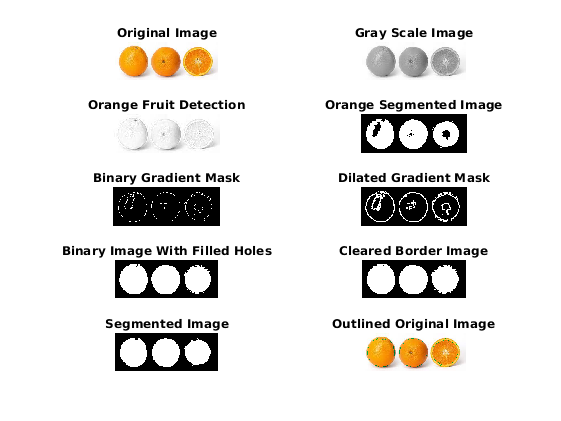
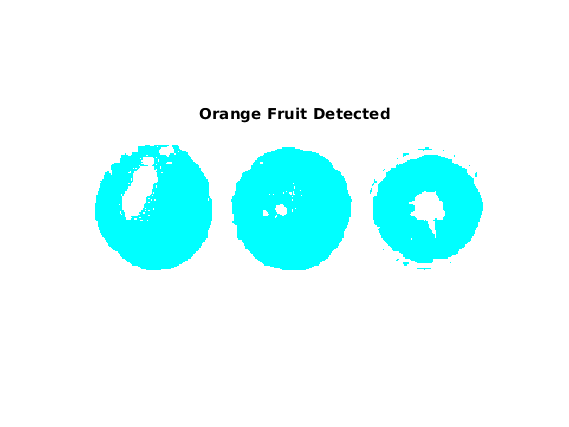
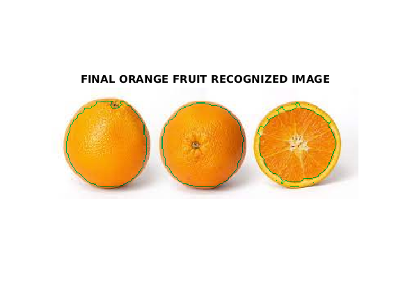

clc
clear all
close all
warning off
I = imread('xyz2.jpg');
subplot(5,2,1);
imshow(I);
title('Original Image');
m= rgb2gray(I);
subplot(5,2,2);
imshow(m);
title('Gray Scale Image')
imwrite(m, 'GrayScale.jpg');
orange=I(:,:,1);
subplot(5,2,3);
imshow(orange);
title('Orange Fruit Detection');
imwrite(orange, 'orangePartDetection.jpg');
l=imsubtract(orange,m);
J=im2bw(l,0.25);
subplot(5,2,4);
imshow(J);
title('Orange Segmented Image');
imwrite(J, 'orange_part_segmented.jpg');
temp1 = edge(J,'approxcanny');
fudgeFactor = 0.5;
subplot(5,2,5);
imshow(temp1);
title('Binary Gradient Mask');
imwrite(temp1, 'BinaryGradientMask.jpg');
dialated1 = strel('line', 3, 90);
dialated2= strel('line', 3, 0);
temp2 = imdilate(temp1, [dialated1 dialated2]);
subplot(5,2,6);
imshow(temp2);
title('Dilated Gradient Mask');
imwrite(temp2, 'DialatedGradientMask.jpg');
fill1 = imfill(temp2, 'holes');
subplot(5,2,7);
imshow(fill1);
title('Binary Image With Filled Holes');
imwrite(fill1, 'FilledHoles.jpg');
border1 = imclearborder(fill1, 4);
subplot(5,2,8);
imshow(border1);
title('Cleared Border Image');
imwrite(border1, 'clearedBorder.jpg');
seD = strel('diamond',1);
final1 = imerode(border1,seD);
final1 = imerode(final1,seD);
subplot(5,2,9);
imshow(final1);
title('Segmented Image');
imwrite(final1, 'finalGraySegmentation.jpg');
outline = bwperim(final1);
Segmentedout = I;
Segmentedout(outline) = 0;
subplot(5,2,10);
imshow(Segmentedout);
imwrite(Segmentedout, 'output.jpg');
title('Outlined Original Image');
imwrite(Segmentedout, 'Output.jpg');
imwrite(label2rgb(J),'SantraOutput.jpg');
figure, imshow(label2rgb(J));
title('Orange Fruit Detected');
figure, imshow(Segmentedout);
title('FINAL ORANGE FRUIT RECOGNIZED IMAGE');
  